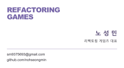

SlideIT
손짓으로 건네고 카메라로 읽는 디지털 명함.
GitHub 저장소
리팩토링 게임즈 대표 · Refactoring Games
모서리를 잡고 움직여 보세요옆으로 밀어 뒤집기
손짓으로 건네고 카메라로 읽는 디지털 명함.
GitHub 저장소하수도를 배경으로 한 공포 게임 데모.
데모 영상 보기내가 문장을 끝내면 상대의 문장이 뒤섞입니다.
GitHub 저장소한국어 답변의 표현을 바꿔 토큰을 얼마나 아끼는지 잽니다.
GitHub 저장소팀원들의 시간표에서 함께 비는 회의 시간 세 곳을 찾습니다.
GitHub 저장소코드가 막힐 때 바탕화면 한쪽에서 꽥 하고 우는 오리.
GitHub 저장소Windows 트레이에서 저장소를 돌보고 변경 사항을 PR로 보냅니다.
GitHub 저장소공포게임에서 플레이어의 3초 뒤 위치를 예측하는 실험.
GitHub 저장소하루에 하나, 얽힌 점을 움직여 모든 선의 교차를 푸는 퍼즐.
GitHub 저장소여러 곡의 무음 구간을 정리하고 한 파일로 잇습니다.
GitHub 저장소작업 과정의 중계는 줄이고 결과를 한 줄로 받습니다.
GitHub 저장소새 기능을 만들기 전에 이미 있는 스킬을 찾습니다.
GitHub 저장소유튜브 자막을 분석해 영상의 주장을 살펴봅니다.
GitHub 저장소AI가 작성한 코드의 보안 문제와 패키지 이름을 점검합니다.
GitHub 저장소술과 안주 카드를 넘기며 내 취향을 고릅니다.
GitHub 저장소Python으로 만든 Stonks Atlas의 공개 작업 기록.
GitHub 저장소브라우저 안에서 손바닥 사진의 손금을 살펴봅니다.
GitHub 저장소시드 하나를 공유하면 같은 대결을 다시 볼 수 있습니다.
GitHub 저장소Claude Code를 얼마나 썼고 언제 다시 쓸 수 있는지 봅니다.
GitHub 저장소AI가 쓴 코드도 같은 기준으로 검토할 수 있게 만든 규칙집.
GitHub 저장소Python으로 작성한 코드를 모은 저장소.
GitHub 저장소작은 판과 큰 판을 함께 쓰는 얼티밋 틱택토 구상.
GitHub 저장소패드를 눌러 강남스타일 밈 사운드를 재생합니다.
GitHub 저장소